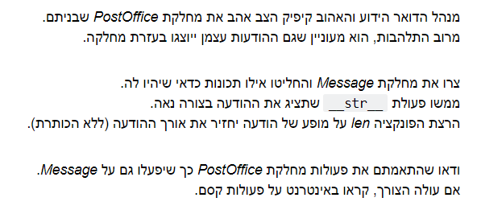
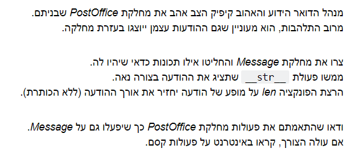

אני לא מצליח להבין מה מבקשים בתרגיל.
צריך לגרום לכך שיהיה מופע של כל ההודעה ממחלקת ה- PostOffice במחלקת Message?
איך מתקשרות הפעולות כאן? התרגיל לדעתי מנוסח מאוד לא ברור ואין לי כרגע מושג איך להתקדם איתו…
אשמח להבהרה


אני לא מצליח להבין מה מבקשים בתרגיל.
צריך לגרום לכך שיהיה מופע של כל ההודעה ממחלקת ה- PostOffice במחלקת Message?
איך מתקשרות הפעולות כאן? התרגיל לדעתי מנוסח מאוד לא ברור ואין לי כרגע מושג איך להתקדם איתו…
אשמח להבהרה
אתה יכול להתחיל מלהחליט אילו שדות יהיו בהודעה = אילו פרטי מידע חשוב לך שיהיה לכל הודעה והודעה שיווצרו אוטומטית ברגע שנוצרת הודעה.
(תשובתי זו מסתמכת על השורה הראשונה בשאלה: “… אילו תכונות כדאי שיהיו לה.”
אתה צריך ליצור מחלקה של הודעה. וברגע שיש לך את המחלקה הזו כל מה שעד היום היה הודעה בתרגיל הקודם אמור להפוך להיות אובייקט במחלקה החדשה שיצרת.
זה אומר שגוף ההודעה הופך להיות class מפני אצמו? או שכל הפרמטרים של ההודעה?
המחלקה היא של הודעה, וכוללת בתוכה את כל הדברים והנתונים שמרכיבים את ההודעה.